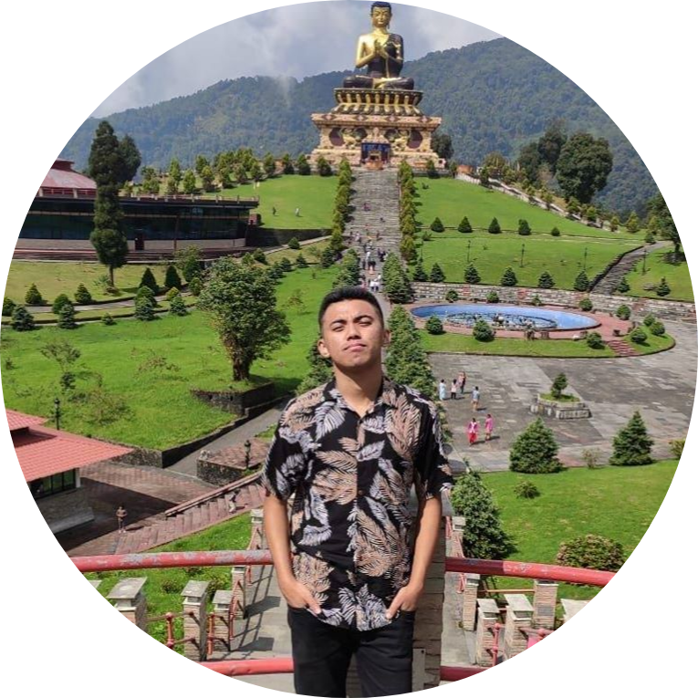

|  |
SANGAY SHERPANational Institute of Technology Sikkim Ravangla – 737139 Sikkim India Mobile:7718411370 Email-id: b170014@nitsikkim.ac.in |
Seeking to work in a dynamic environment in a team to contribute effectively for attaining organizational goals,one that will build on my technical and non-technical skills and give me opportunity for vertical growth.